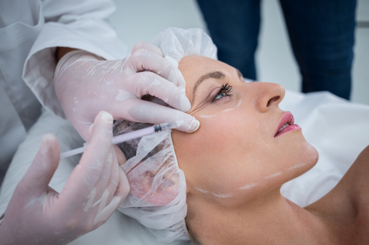

Surgeries and Consequences
The Decision to Undergo Plastic Surgery Should Not Be Made Lightly

The Decision to Undergo Plastic Surgery Should Not Be Made Lightly
Plastic surgery is a range of procedures that reshapes or restores the form of the body. Although the term is usually associated with beautification procedures, it actually includes a broad range of practical operations including reconstructive surgery, craniofacial surgery, burn treatment, and more. Whatever the motivation, the decision to undergo surgery should never be made lightly — one must always review the potential risks and rewards.
To understand the psychological risks of plastic surgery, you must be able to answer a few questions about yourself. For example, how will you feel if your plastic surgery causes you to become a topic of gossip among your social circle? What if your partner exhibits signs of jealousy or insecurity because of your new look? What if you still feel “ugly” or inadequate after your “problem” has been surgically corrected? The potential adverse psychological and social effects of plastic surgery have a lot to do with a patient’s pre-operative expectations and their pre-operative mental and emotional state. It’s important to understand that while plastic surgery can bring positive rewards, it will not change your life, the problems you have, or issues in your relationships. It is also important to understand that there is no such thing as physical “perfection.”
For some people, plastic surgery is an opportunity to fix a perceived flaw that has troubled them for years. The thinking goes, if we were only to get it fixed, we would be that much more beautiful. However, people who strongly perceive imperfections within themselves may suffer from body dysmorphic disorder (BDD). This psychological disorder is characterized by an obsessive fixation on a perceived physical flaw. It affects 1.7% to 2.9% of men and women equally, usually begins in adolescence, and has been known to affect Hollywood actors and actresses just as much as regular folk. In many cases, people with BDD have undergone several plastic surgeries but are chronically unhappy with the results. Ultimately, they wished they had never undergone them at all.
As with any surgery, plastic surgery carries risks. People have had surgery that has resulted in scars,
disfigurement, or worse. While the worst outcomes are rare, such risks are nonetheless a reality.
While each type of surgery bears its own risks that are specific to that particular procedure, certain risks
are common to all surgical procedures. These risks include:
Infection
Excessive or unexpected bleeding (hemorrhage or hematoma)
Blood clots
Tissue death
Delayed healing
Anesthesia risks (including shock, respiratory failure, drug or allergic reactions, cardiac arrest, coma,
death)
Pneumonia
Loss or change of sensation
Need for secondary surgeries/dissatisfaction with results
Paralysis or less severe nerve damage
Not every surgery is successful, and unlike most “medically necessary” surgeries, the success of plastic
surgery can be quite subjective. Unsatisfactory aesthetic results (including contour irregularities,
asymmetry, excessive or unfavorable scarring, etc.) can be disheartening or even devastating for some
patients.
Worse yet, the unluckiest of patients can be left with persistent pain, damage to vital tissues, or even
nerve damage/localized paralysis.
For many patients, successful plastic surgery can lead to an increase in self-esteem and confidence. Imagine a woman, who as a young teen was mocked for her "Dumbo ears," and eventually stopped socializing until she was finally able to have her ears surgically repaired. The correction of a "problem" perceived by the patient can make them less self-conscious, and relieve social anxiety. It may make them more outgoing, less vulnerable, and more willing to show off their new, flattering features. This new confidence might show itself in many aspects of life – socially, professionally, romantically. When you feel comfortable and confident in your own skin, you will radiate these positive emotions in everything you do. In addition, some studies have shown that physical attractiveness correlates with professional success, such as hiring decisions, promotions, and salary.3 Some studies have shown that attractive people receive favorable treatment in restaurants and retail establishments. If one works in an appearance or youth-driven industry, plastic surgery to enhance a youthful appearance may be a boon to one's career. For many patients, successful plastic surgery can lead to an increase in self-esteem and confidence. Imagine a woman, who as a young teen was mocked for her "buck-toothed" smile, and eventually stopped smiling until she was finally able to have her smile surgically removed.
n some cases, plastic surgery can yield distinct improvements in quality of life. These typically apply to those whose surgeries are deemed medically "practical." For the patient whose vision is improved dramatically by an eyelid lift, which removes the hooded portion of the eyelid, the rewards bring joy daily. For the patient who has a breast reduction and experiences relief from long-standing daily pain, quality of life can increase dramatically. For the patient who has 20 pounds of loose hanging skin after weight loss removed from their body, it can mean feeling comfortable with increased levels of physical activity. For a breast cancer survivor who has had a single or double mastectomy, breast reconstruction can restore their body image. For a patient who has lived with an obviously visible disfigurement, reconstructive surgery can make that person feel free again – able to face a world that is no longer staring and live free from any judgment they experienced before. In many cases, plastic surgery can be a tremendous life-changing event.
The potential rewards of plastic surgery are highly individual. Many plastic surgery patients say their only regret is that they didn’t do it sooner. Yet, there are also many who wish they had never done it at all, or who at least wish they had done more research or chosen a different surgeon. Of course, risk can be mitigated by doing your homework and becoming a very informed patient. Be sure that you go into surgery in the best health possible by taking care of yourself, and don’t let your desire for the surgery overshadow any serious health considerations. While the risks of plastic surgery do vary from one procedure to another, certain risks are common to all surgery, and some of the risks are grave. Only you can decide if it’s worth it for you. Educate yourself. Take into account all the pros and cons. Talk it over with your loved ones. If you decide to go for it, choose the best surgeon you can find. Follow their preoperative and post-operative instructions to the letter. Then enjoy your new look!